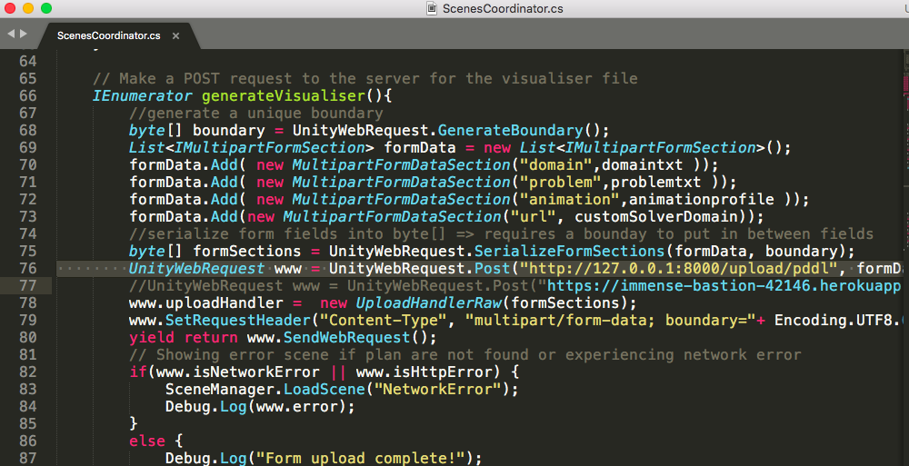

Software Build and Deployment DocumentLink
| Version | Author | Date | Comment |
|---|---|---|---|
| 0.1 | Gang Chen | 18/09/2018 | Deployment process for Ubuntu server. Ubuntu is one major OS that unimelb uses. |
| 0.2 | Gang Chen | 24/09/2018 | The next release of this document will cover Heroku server. |
| 0.3 | Hugh Edwards | 7/10/2018 | Convert to Markdown, editing |
| 0.4 | Nir Lipovetzky | 1/5/2020 | editing, github and server migrated |
PurposeLink
This document describes how to build and deploy the Planning Visualisation standalone software.
Document OverviewLink
This document is organised in the following sections:
- Requirements: Requirements for deployment
- Project Repository: Contains information on how the repository is organised.
- Pre-deployment Process: Details how to build the software from the source code and how to build the other project artefacts. Additional information on the various steps of the build process is also provided as well as a list of all required libraries.
- Deployment: How to install and run the software, and the system requirements.
- Post-deployment: Details how to display the final product.
- Heroku-deployment: Details how to deploy the final product on Heroku.
1. RequirementsLink
Build Agent RequirementLink
Your build agent will need to meeting the following minimum requirements. GPU is a must as you will need a valid graphic card and graphic card drive to activate Unity:
| Components | Minimum Requirement |
|---|---|
| Operating System | OS: Windows 7 SP1+, 8, 10, 64-bit versions only; macOS 10.11+. Server versions of Windows & OS X are not tested. |
| CPU | CPU: SSE2 instruction set support. |
| GPU | GPU: Graphics card with DX10 (shader model 4.0) capabilities. |
| Aditional Platform Development Requirements | iOS: Mac computer running minimum macOS 10.12.6 and Xcode 9.0 or higher. Android: Android SDK and Java Development Kit (JDK); IL2CPP scripting backend requires Android NDK. Universal Windows Platform: Windows 10 (64-bit), Visual Studio 2015 with C++ Tools component or later and Windows 10 SDK |
Deployment Server RequirementLink
The deployment server used in developnet is a Linux OS family member - Ubuntu. This section covers the minimum hardware requirements for these deployment servers.
Ubuntu Desktop EditionLink
Processor: 2 GHz dual core processor RAM: 2 GiB RAM (system memory) Storage: 25 GB of hard-drive space (or USB stick, memory card or external drive but see LiveCD for an alternative approach) Display: VGA capable of 1024x768 screen resolution (Optional) Accessories: Internet access Port Selection:
- 22/tcp open ssh
- 80/tcp open http
- 631/tcp open ipp
- 3306/tcp open mysql
- 8000/tcp open http-alt
Ubuntu Server EditionLink
Processor: 300 MHz x86 processor RAM: 256 MiB of system memory (RAM) Storage: 1.5 GB of disk space Display: Graphics card and monitor capable of 640x480 (Optional) Accessories: Internet access Port Selection:
- 22/tcp open ssh
- 80/tcp open http
- 631/tcp open ipp
- 3306/tcp open mysql
- 8000/tcp open http-alt
2 Get SourcesLink
The source code and related artefacts are hosted in Github, the backend and frontend repositories can be cloned through the following command:
git clone https://github.com/planimation/backend.git planimation-backend
git clone https://github.com/planimation/frontend.git planimation-frontend
All the code is available in https://github.com/planimation/
3 Pre-deployment ProcessLink
Planning Visualisation’s presentation layer is based on WebGL and Unity, the contents of which can be generated from the Unity part of the repository. This section covers how and what to generate:
3.1 Install Unity DependenciesLink
Install the Version 2018.2.1f1 from https://unity3d.com/, when installing, select "Include WebGL”.
Additionally, download the followings for building Unity files (This requires roughly 50MB storage space).
sudo apt-get install -y libgconf-2-4
sudo apt install libcanberrra-gtk\*
3.2 Build Unity ProjectLink
The build process is designed to be cross-platform and self-contained. What all this means is that you can run the various build tasks on any machine where a validated Unity is available, without having to worry about resolving other library dependencies.
The Unity project can either be built from the Unity command line, or from the Unity GUI.
3.2.1 Building from command lineLink
To build from the command line, enter the following command. We illustrate the idea with Ubuntu build agent. However, the idea can apply to any OS.
Move to the /PlanningVisualise directory in the repository that you’ve just checked out from Section 1 and from there type, at the command prompt:
/home/$USER/Editor/Unity -batchmode -quit -projectPath “ProjectPath” -executeMethod Buildscript.Build -logFile stdout.log
- You will need to replace the “ProjectPath” with the absolute path of your cloned copy of the repository. E.g. “/home/$USER/planimation-frontend”
- You will need to replace “/home/$USER/Editor/Unity” with the absolute path of Unity executable on your build agent.
- Compilation progress can be found in “stdout.log”.
For more information on each of the components in the command, please visit https://docs.unity3d.com/Manual/CommandLineArguments.html
Should you wish to update the User Interface of this application, you need to include all your customised Unity scenes in the buildscript prior to compilation, buildscript can be found:
../planimation-frontend/Assets/Editor/buildscript.cs
With having the command executed, a folder called “build” should appear under the /planimation-frontend directory and this will be the final animation contents for the deployment process in Section 4.
3.2.1 Building from Unity GUILink
- Open Unity
- Click File -> Build Settings
- Choose 'WebGL'
- Make sure all the selected scenes are those under the 'Visualisation' folder
- Click 'Player Settings'
- Click 'Publishing Settings'
- Tick 'WebAssembly' checkbox
- Click 'Build'
- Create 'buildweb' folder
3.3 Install Python3 Dependencies for the BackendLink
Should you wish to change the server side of the repository, you will need to install the following libraries in order to compile the python files with Python3 Interpreter, Python3 Interpreter can be downloaded with :
sudo apt-get update
sudo apt-get install python3.6
Addition libraries include:
sudo apt-get install python-pip
sudo pip install numpy scipy
4 Ubuntu Deployment ProcessLink
Installing and running Planning Visualisation is very easy: drop the distribution directory somewhere on your filesystem and run your servers! This section details all this more precisely. An obvious set of pre-requisites is Apache server and Django Server.
4.1 Apache Web Server InstallationLink
For Ubuntu server, run the following commands to install Apache server:
sudo apt-get update && sudo apt-get upgrade
sudo apt-get install apache2 apache2-doc apache2-utils
After having successfully installed the Apache server, you can run the server with the following command:
sudo service apache2 start
4.2 Apache Web Server DeploymentLink
With the command provided in section 2, you should be able to get a folder called “buildweb” under “../planimation-frontend/”. The remaining is easy: drop the distribution directory to the designated Apache source folder and restart your apache server:
- Move all the files and subdirectories under “build” to “/var/www/html/“
- Restart the apache server with
“sudo service apache2 restart”
4.3 Django Server InstallationLink
For Ubuntu server, run the following commands to install Django server:
sudo apt install python3-pip
pip3 install djangorestframework django-cors-headers colour
pip3 install --upgrade django
sudo apt-get install python3-django
sudo apt-get install gunicorn3
4.4 Django Server DeploymentLink
Once the installation is done and the Django server is ready, move to the /planimation-backend/server directory and from there type, at the command prompt:
sudo gunicorn3 -b 0.0.0.0:8000 server.wsgi —reload
After all, the server should be reachable from external network and your project should be ready.
5 Post-deploymentLink
Planning Visualisation can then be accessed within any web browser that is compatible with WebGL by typing the IP address of you deployment server.
6 Heroku DeploymentLink
6.1 Pre-deployment ProcessLink
Please make sure your setup has met the following conditions:
- a free Heroku account.
- Python version 3.6 installed locally - see the installation guides for OS X, Windows, and Linux.
- Pipenv installed locally. Accomplish this by running pip install pipenv.
- Postgres installed locally, if running the app locally.
6.2 Deployment ProcessLink
Heroku Command Line Interface (CLI) - Once installed, you can use the HEROKU command from your command shell. To log in with your Heroku account:
heroku login
Enter your Heroku credentials.
//Email: [user@example.com](mailto:user@example.com)
//Password:
To clone your project with:
git clone [https://github.com/heroku/python-getting-started.git](https://github.com/heroku/python-getting-started.git)
cd python-getting-started
Next, create an app on Heroku, which prepares Heroku to receive your source code:
heroku create
When you create an app, a git remote (called heroku) is also created and associated with your local git repository. Heroku generates a random name (in this case lit-bastion-5032) for your app, or you can pass a parameter to specify your own app name. Now deploy your code:
git push heroku master
Use a Procfile to explicitly declare what command should be executed to start your app.
The Procfile in the example app you deployed looks like this:
web: gunicorn gettingstarted.wsgi --log-file -
This declares a single process type, web, and the command needed to run it. The name web is important here. It declares that this process type will be attached to the HTTP routing stack of Heroku, and receive web traffic when deployed. Procfiles can contain additional process types. For example, you might declare one for a background worker process that processes items off of a queue.
6.3 Unity with Heroku DeploymentLink
When deploying the Django server with Heroku, you will also need to make sure to redirect the traffic for your local server to Heroku within Unity, this can be done by simply enabling and changing the settings in ScenesCoordinator.cs:

As shown above in the picture, the current setting is pointing to local machine. Enabling the line below will redirect the data stream to your Heroku server. You should replace “https://immense-bastion-42146.herokuapp.com/upload/pddl” with your Heroku application.